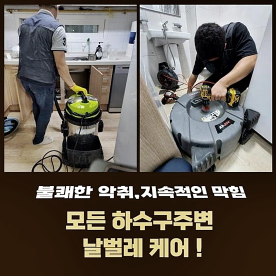
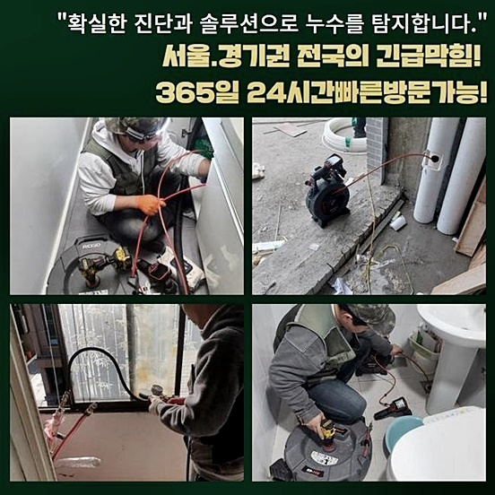
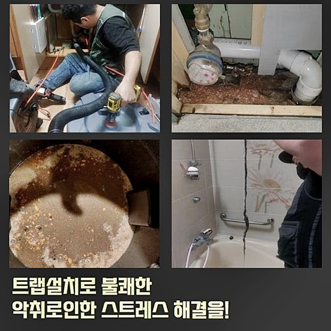
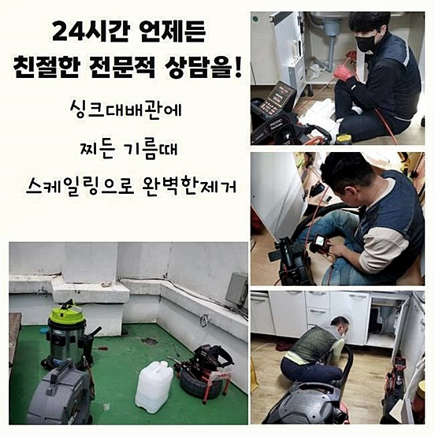
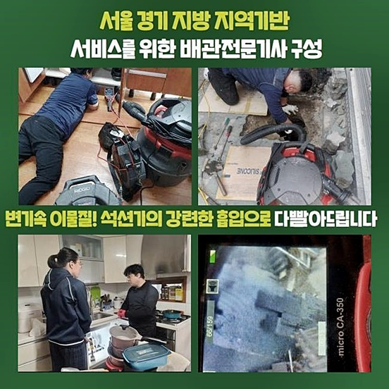
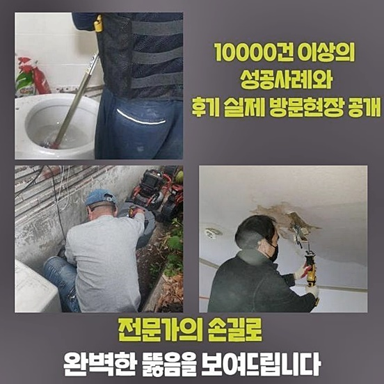
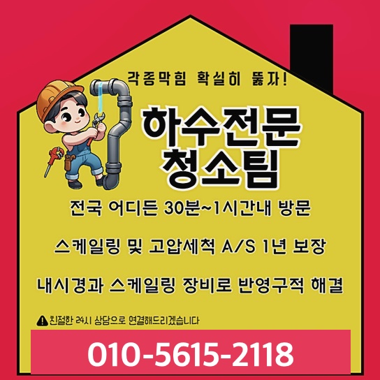

🏠 관문동싱크대배수구역류 원문동 배관내시경카메라 부속수리
용인시 처인구 배관막힘 전문 시공 후기

📋 작업 개요
- 위치: 용인시 처인구, 수원시 영통구, 화성시 동탄
- 서비스 유형: 배관막힘, 고압세척, 내시경점검
- 작업 일시:
- 업체명: 하수구수사대 (010-5615-2118)
🔍 문제 상황
관문동싱크대배수구역류 원문동 배관내시경카메라 부속수리
여러 가게가 모여있는 상가건물 내부에서 하수구가 가로막혔다는 소식을 듣고서 즉시 해당 위치로 향하여 관통을 해드렸는데요
다채로운 업종의 가게들이 여러 호실 모여있는 다중 상업지는 특히나 하수구의 고장이 자주 생길 것을 대비하셔야 하겠죠
배수 이상을 느낀 직후 빠르고 정확한 대응책이 적용되지 않는다면 들불 번지듯 피해 점포들이 퍼질 위험이 있으므로 위급 사항으로 분류하여 빠른 속도로 현장을 달려가 처리를 도맡아오고 있습니다
상가 건물은 다분야의 점포들이 밀접하게 이어져 있는 만큼 기하급수적으로 다량의 내부 이물질이 파이프의 내면으로 차곡차곡 저장이 되는거죠
현재 식품 관련 업종을 관리하고 계셨는데 느닷없이 생긴 하수구의 중단에다가 역류까지 겹쳐서 가게 오픈도 못하시던 아주 곤란한 상황이었는데요
사전에 이야기를 나눠보았더니 잘 작동하다가 이틀 전 뭔가 이상하다는 증거들이 발견되기는 했는데 별 문제는 아닐거라고 생각하여 조치 없이 더 들여다보지는 않으셨다고 해요
하수관에서 일어나는 일들은 일상에서 쓰는 생활용수와 긴밀한 연계성이 있는 만큼 단수로 인한 고통을 경감시키기 위해서는 설비적인 오류가 보이면 망설이지 말고 행동에 옮겨야 합니다
상가 앞에 당도한 후 문제가 생긴 지점으로 가서 어떤 문제가 벌어졌는지 진단해 보니 아까 알려주신 바와 같이 통수 마비에 역류 증세까지 벌어져버린 상태더라고요

🔎 원인 분석
💡 전문가 진단: 정밀 진단 장비를 사용하여 슬러지의 고착 여부를 판명하고 타격/세척 작업을 실시했습니다.
잔뜩 오염된 하수구로 인해 퀘퀘한 냄새가 유발되는 것을 빠르게 판단할 수 있었습니다
이렇게 냄새가 더 난다면 손님들이 피하게 되는 사유 중 하나라서 재빠르게 수습하는 게 좋습니다
복잡하게 얽힌 사건을 전반적으로 개선하기 위해선 오류의 근원을 진단하고 적절한 솔루션을 발동시켜서 작업해 주는 것이 유익한 처사인데요
제대로 된 문제점을 이해하기 위해선 전용 기기인 촬영도구를 꺼내들어야 합니다
유연한 호스를와 가느다란 형태를 탑재했다는 이점이 있어서 장비없인 보기 힘든 배관 내부를 선명하게 비추어 주는 역할을 하게 됩니다
같이 붙어있는 모니터를 살피며 메인 배관을 주의 깊게 조사하면 막히는 문제들이 만들어진 문제 부위랑 노폐물의 특성까지도 철저히 파악하게 됩니다
전용 내시경을 이용해서 전체적인 리뷰를 거쳐본 결과로 천장 부분에 놓여있는 배관에서 뭔가 이상하다는 증거들이 나타났다는 점을 깨닫게 됐습니다
배관의 심층부까지 확인하니 점도가 높은 기름 슬러지가 밀집된 덩어리로 경화된 상태였고 한 부분에 부착된 불순물은 물과 반응해서 부식이 진행되어 버린 매출과 직결되는 문제가 있었어요
하수관 쪽의 오류가 있는 작업 현장을 둘러보면 유분기가 가득한 노폐물이 관로의 벽체에 상당수를 차지하고 있습니다
물과 기름은 분리되는 성격을 띠고 있으므로 배관의 어느 곳이든 소량씩 남아 있게 된다면 결합된 한 덩어리로 굳어버리게 되고 덩어리는 더 커져서 물이 나가지 못하게 차단합니다

🔧 작업 과정
관찰해본 관로의 컨디션이 나쁜 편에 속했기 때문에 여러 기기를 같이 써서 환경 개선을 해주는 것이 필요하겠다고 판단내렸어요
우선 플렉스 샤프트를 돌려서 여기저기 나타난 봉쇄된 곳을 처리해주고 구멍을 형성하여 높은 압력의 물대포 세척을 실시해서 완벽하게 보완하기로 했습니다
강인한 샤프트는 고착화된 오물을 잘게 해체하는 것에 능한 변화를 만들어주는 장비이며 끝부분의 노커가 벽체가 압박받는 경우를 최소화하며 작업할 수 있는 옵션을 보유하고 있어요
일부분에 몰려있는 부유물들로 인해서 통로의 차단과 같은 문제가 일어나게 됐다면 단순히 샤프트만 이용하는 작업만으로도 하수의 배출 장애를 해소하실 수 있습니다
흐름이 멈췄던 상태가 꽤나 열리게 되었다면 이제부터는 하수관이 배치되어 있는 장소로 전환하여 고압수 세척 순서에 들어가게 되는데요!
고공 위치에서 업무를 이행해야 하는 상황인지라 사다리를 세워두고 작업에 임하게 됐어요
이러한 세정 단계에서는 물에 섞인 이물질 분자들이 마그마처럼 튀어나올 것이 예상됐기에 커다란 비닐을 깔아서 완벽하게 깔아놓은 조건에서 본 단계를 착수하게 됩니다
고압세척은 고압의 물을 뿜어내어 내부 환경을 씻어내려주는 것인데 생성된지 꽤 돼서 접착력이 강해지고 벽체에 달라붙은 잔 찌꺼기도 무리 없이 씻어내 줍니다
고기능의 장치인 만큼 환경에 걸맞는 레벨을 변경할 수 있어야 하는 등 작동법을 간파한 숙련공이어야 하자없는 시공이 됩니다
일괄적으로 분사하는 게 아닌 약해진 배관 라인에 파손이 일어나지 않게끔 위치에 따라 강도를 다르게 설정해서 세정하는 것이 중요합니다
해당 기계가 만들어내는 실제적인 압박감은 경탄스러울 정도로 뛰어나기에 무책임한 태도로 작업을 이어가게 되면 배관이 자극받는 일을 일으켜 물이 새는 끔찍한 사건같은 손댈 부분이 더 많아질 위협도 있기 때문입니다
여러 케이스를 접해온 경력을 토대로 장치의 특성을 충분히 이해하고 2차적인 피해가 없게 하수구 환경을 개선하도록 심혈을 기울이고 있습니다
그리고 완벽한 작업이 형성될 수 있도록 고압수를 쏘는 작업에 착수하기 전에 배관의 상태와 노후 정도를 체크하는 사전 과정을 필히 거치고 있습니다
말끔히 물로 쓸어내 주고 내시경탐사를 이어가면 전과는 큰 격차로 변화한 배수로의 모습을 직접 볼 수 있습니다
다수의 영업장들이 자리 잡고 있는 상가형태의 빌딩이면 평균 주기를 설정하여 전문적인 세정작업을 거친다면 하수구 막힘때문에 빚어진 곤란함을 얼마든지 방지할 수 있습니다!
물이 아예 막히는 하수구 불의의 사고가 생긴다면 무엇보다도 전문적 탐색과 조치가 가장 효과적인 요소입니다


✅ 작업 완료
막힘의 초기 레벨에 작업이 달성된다면 아무 무리없이 문제를 개선할 수 있는 점을 알아두시면 도움이 될겁니다
약간 불편해도 참고 쓰신다면 더 오래 불편함을 참아야하는 상황이 빚어질 수 있으니 문제점을 발견하면 빠르게 의뢰를 주셔야만 초반부에 비교적 수월하게 시설물을 손봐서 정상화를 시켜드립니다
충만한 현장 경험을 갖춘 설비 전문진이 계신 곳으로 바로 이동해서 지긋지긋한 막힘에서 벗어날 수 있는 최대효율을 내줄 작업을 맞춤 적용해 드리고 있습니다
설비적 개선이 필요하시다면 아무리 늦은 시간일지라도 책임감있는 저희 업체에 연락해 주시면 감사드리겠습니다




⚠️ 하수구 배관 막힘 예방 및 관리 가이드
- ✅ 머리카락, 비닐, 물티슈 등 물에 분해되지 않는 이물질은 절대 흘려보내지 마세요.
- ✅ 기름기 많은 식기는 설거지 전 키친타올로 먼저 기름때를 닦아내세요.
- ✅ 주기적으로 배수구에 뜨거운 물을 가득 부어주어 유지방 고착을 방지하세요.
- ✅ 작업 후 1년 이내 재발 시 무상 A/S 보증 서비스를 제공합니다.
💡 핵심 정리
- 확실한 장비 작업(내시경 점검 및 샤프트 스케일링)으로 원인을 뿌리 뽑습니다.
- 작업 후 1년 이내에 동일한 부위 재발 시 100% 무상 A/S 서비스를 보장합니다.
- 서울 · 경기 · 인천 전 지역에 24시간 언제든 긴급 출동할 수 있도록 항시 대기 중입니다.
❓ 자주 묻는 질문 (FAQ)
🚨 용인시 처인구 배관막힘 문제로 고민이신가요?
정확한 원인 진단과 확실한 시공으로 재발 없는 해결을 약속드립니다.
24시간 긴급 출동 | 서울 · 경기 · 인천 전지역 | 1년 내 재발 시 무상 A/S